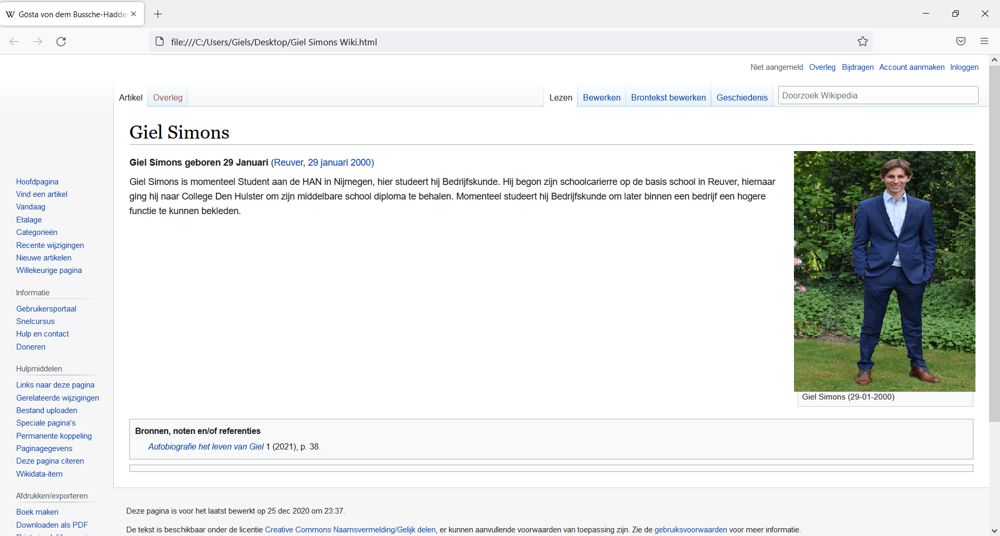

Week 1
In de eerste week hebben we in de les kennis gemaakt met de basis van HTML, dit hebben we gedaan aan de hand van een opdracht waarbij we van een bestaande site de HTML code moesten aanpassen naar iets persoonlijks. Met de hele klas kregen we een groepsproject toegewezen, we kregen de opdracht om samen met de heleklas één website te maken.
Hello World opdracht:
De eerste opdracht die wij dus kregen was het maken van een persoonlijke website doormiddel van het aanpassen van de HTML-code van een bestaande website. Wanneer ICT'ers altijd iets testen noemen ze dit (bijna) altijd "Hello World" vandaar ook dat onze opdracht zo heet.
De website die ik gebruikte om mijn eigen draai eraan te geven is Wikipedia, mij leek dit de meest eenvoudige website om te bewerken. Zo vond ik het gemakkelijk om de afbeelding die altijd rechts op de pagina staat te vervangen met een persoonlijke foto en de tekst aanpassen was ook zeer eenvoudig doormiddel van de functie "Inspecteren". Hieronder zie je een screenshot van het resultaat.
Ik vond deze opdracht erg geschikt om kennis te maken met HTML, voordat de les begon had ik ooit alleen gehoord van wat HTML is, nooit had ik gedacht dat ik op het eind van de les ook echt al bezig zou zijn met HTML.
Klassikale Website:
De opdracht die we kregen als klas was om een website te maken, die gebruikt zou kunnen worden
om
ieders portfolio op te laten zien. Voor deze opdracht moesten we de klas gaan indelen in
verschillende groepen met ieder zijn/haar eigen verantwoordelijkheid en functie. Deze aanpak van
het project is vergelijkbaar met hoe in een echte organisatie technologische projecten worden
aangepakt. Er waren 5 verschillende groepjes:
Ik werd zelf ingedeeld bij de project managers, waarbij ik de verantwoordelijkheid had over het groepje de Web developers. Met alle project managers hebben we in het begin meteen samengezeten en een planning opgestelt. Ik was dus de project manager voor het groepje van Web developers, hierbij was ik verantwoordelijk voor de juiste informatie kregen, als er problemen waren ik deze zou oplossen, werkverdeling gemaakt, de juiste bestanden kregen aangeleverd en dat het allemaal volgens schema zou lopen. Voor de communicatie tussen de groepsleden heb ik als project manager een whatsapp groep gemaakt waar iedereen in zat. Omdat het groepje web developers bestond uit ICT'ers en de niet ICT'ers hebben we de eerste keer dat we aan de opdracht werkten allemaal samengezeten zodat de ICT'ers de niet ICT'ers konden helpen.